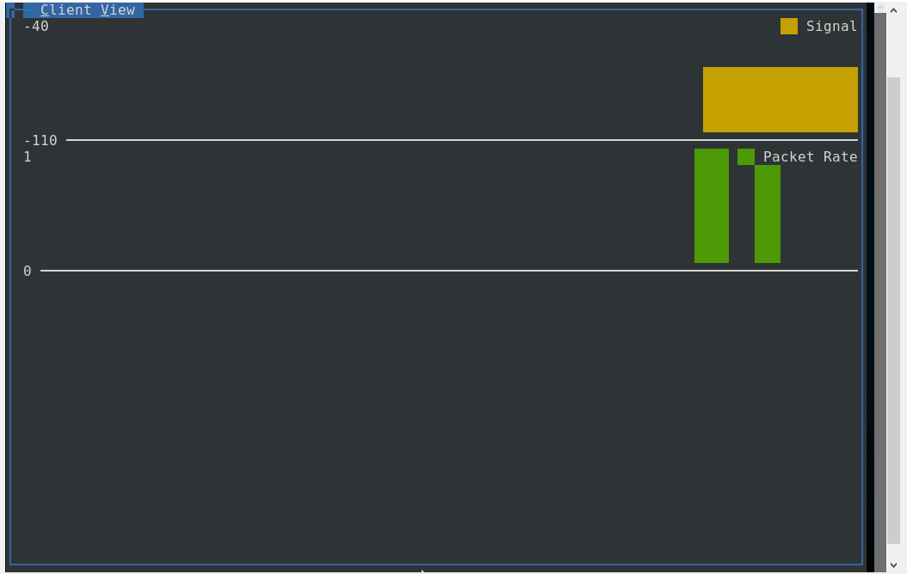

Introdução
É uma ferramenta poderosa, que pode ser usada tanto para checar a segurança de sua própria rede wireless quanto para checar a presença de outras redes próximas e, assim, descobrir os canais que estão mais congestionados (de forma a configurar sua rede para usar um que esteja livre) ou, até mesmo, invadir redes. O Kismet em si não impõe restrições ao que você pode fazer. Assim como qualquer outra ferramenta, ele pode ser usado de forma produtiva ou destrutiva, de acordo com a índole de quem usa. Uma observação é que o Kismet por si não faz ataques ou defende você de invasores, ele é uma ferramenta para gerar dados e então poder ser usada por outras de forma defensiva ou ofensiva.
Plataformas
Originalmente desenvolvido para uso em plataformas Linux, porem hoje já é compatével com OSX e em certo level com o Windows. No caso do Windows a plataforma não tem compatibilidade direta, para funcionar devera ser utilizado por intermédio do Cygwin (Cygwin.com).
Vantagens
O kismet é um software open source ainda em desenvolvimento, nesta pagina usaremos a versão mais estável no momento, sabendo que existe funcionalidades extras em versões em teste ainda. O ponto mais forte que levou o Kismet a ter espaço no mercado , alem de ser open source, é o fato de ser uma das poucas ferramentas focadas em rastreamento de rede wireless quando inicialmente desenvolvido.
Tutorial
Ao abrir o Kismet
